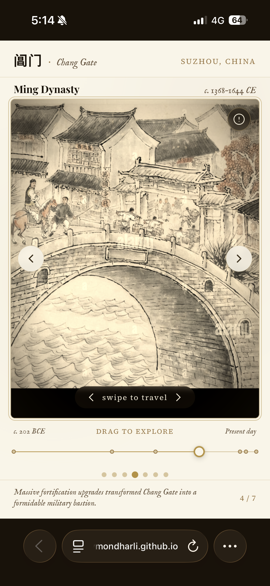
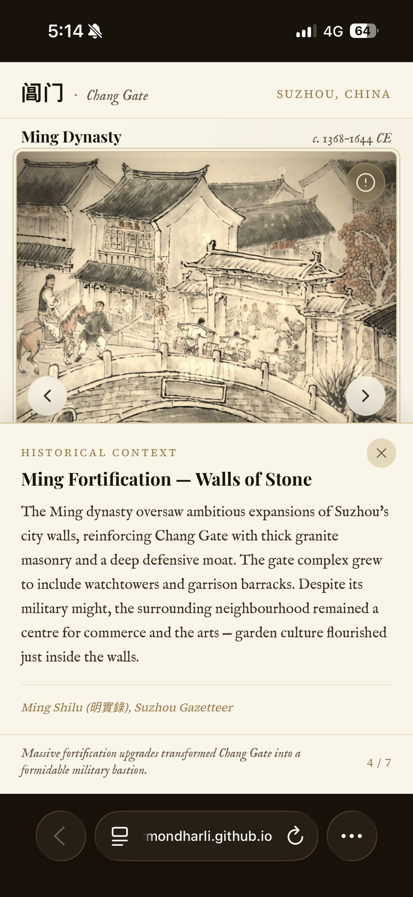

Why This Project?
Chang Gate (阊门) has stood in Suzhou for over 2,200 years. From the Han Dynasty through today, it has witnessed wars, dynasties, and the transformation of an ancient city into a modern metropolis.
But most people walk past it without knowing what they've seen. Museum plaques are dense. Wikipedia is overwhelming. Audio guides are passive.
Our answer: A web app that turns time into a swipe. Seven eras. Seven images. One slider. A visual cue that you're traveling into the past.
The gap we're filling: No existing heritage app lets you drag a timeline from 200 BCE to 2024 and watch history fade from sepia to color. That's what Chronogate does.
User Journey Map
How a student experiences Chang Gate through Chronogate
Demo & Prototype
Actual screenshots from the Chronogate web app

📱 Chang Gate Main ScreenMing Dynasty view
Chang Gate · Main View
The Ming Dynasty era screen showing the gate's grand fortification upgrades. Clean typography, swipe navigation, and era indicator.

📜 Historical ContextMing Dynasty details
Historical Context Panel
Tapping the "i" button reveals detailed historical information with citations from Ming Shilu (明實錄) and Suzhou Gazetteer.
Drag from Han → Present
Sepia fades as time advances
Timeline Navigation
Drag the handle or tap anywhere on the track to jump between 7 historical eras — from Han Dynasty to present day.
Left/Right gestures
Seamless era transitions
Swipe Navigation
Intuitive swipe gestures let users "flip through time" like a photo album. Works on both mobile and desktop.
Key Features
Drag through 2,200 years of history instantly
Intuitive touch navigation on any device
Visual metaphor: deeper sepia = farther past
Citations, poetry, and primary sources
Works in any browser via QR code
Han → Tang → Song → Ming → Qing → Republic → Today
About Chronogate
Chronogate is designed to revolutionize how visitors interact with the historic Chang Gate. By bridging cutting-edge technology with cultural heritage, Chronogate provides an immersive, easy-to-navigate, and deeply informative experience — from tech enthusiasts exploring architecture to students learning Chinese history.
User Personas
Alex · Tech-Savvy Explorer
Age: 28 · Software Engineer
Goals: Wants to explore intricate architectural details through interactive features and understand the technical execution of historical reconstructions.
Pain point solved: Chronogate's timeline slider and sepia metaphor give Alex a satisfying "time-travel" mechanic to analyze.
The Miller Family · Casual Travelers
Profile: Family of four on weekend vacation
Goals: Want to enjoy Chang Gate without being overwhelmed by dense plaques. Kids can swipe independently; parents tap for deeper context.
Pain point solved: Everyone learns at their own pace — no one gets bored or frustrated.
Ms. Chen · History Teacher
Age: 45 · Middle School Teacher in Suzhou
Goals: Needs a classroom-friendly tool that shows dynastic change without overwhelming students with text.
Pain point solved: One QR code lets her whole class explore 2,200 years in 5 minutes. Visual timeline sparks discussion.
Built With
Lightweight, accessible, and works on any device with a browser — no app store required.
Experience Chronogate
Scan the QR code to try the interactive time-travel experience
Scan to experience Chronogate
Or visit: https://raymondharli.github.io/Grand-Vision-Canal/
References
🤖 AI Disclosure
AI-generated content used in this project:
- [1] Gemini Nano Banana, version 3.1, accessed on 2026-04-24, available at [https://gemini.google.com](https://gemini.google.com/). Used for generating code snippets and debug logics.
- [2] Claude.ai (Anthropic), version 3.5 Sonnet, accessed on 2026-04-28, available at [https://claude.ai](https://claude.ai/). Used for vibecoding and debugging / verifying codes.
- [3] Deepseek, version 3.2, accessed on 2026-04-28, available at (https://deepseek.com/). Used for looking up and researching historical information and references.
Behind The Experience
The Keepers of Time
A team of designers, developers, and storytellers bringing Chang Gate's history to life.
Raymond Harlie
Built and designed the interaction flow of the experience.
Nelson Lie
Handled historical research and technical implementation.
XiangYu Lou
Curated historical narratives and archival references.